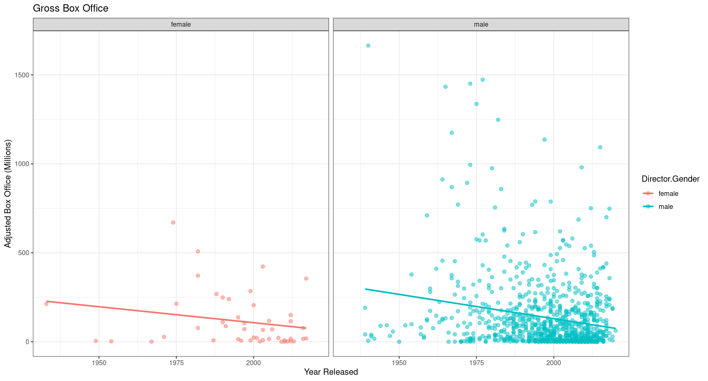

While reading a blog post shared by Caroline Barret on July 25, 2018 on R Bloggers I was inspired to imitate her project and address the concern of women directors in the film industry. Like Barret, I wanted to test my R skills by creating my own dataset that would be primarily concerned with how the number of women directed films have increased throughout the years and how those movies performed in comparison to films directed by men. Additionally, I will use simple linear regression to project the likely earnings of a released in the next five years. For the purpose of this project, performance is evaluated by gross box office earnings (adjusted for inflation) and a films Meta Score. A Meta Score is assigned by Metacritic after it has received a minimum of fifteen review publications. A score of 81 or higher is determined to be a must-see.
Data Frame Creation - Web Scraping
The data frame for this project was scraped from the IMDB list The 1000 Greatest Films of All Time by gibboanx. IMDB lists are a great source of information, but are not based on any specific facts, rather, these lists are based on the opinions of the author and their contributes, so inherently, this data set was going to be biased in some form or another. This list was selected only based on sample size alone.
Using the rvest package withing R, I created an intricate for loop that would scrape multiple webpages of data. IMDB list has a maximum of 100 movies per page, and so there were a total of 10 pages that had to be scraped to generate the data frame. To do this, I had to create a flexible URL link that would adjust after every pass through a loop.
After the data frame was created, I wrote it to a csv file and exported to Excel for review and cleaning.
Show code
library(rvest)
movies = data.frame()
for (page_result in seq(from = 1, to = 10)) {
link = paste("https://www.imdb.com/list/ls006266261/?st_dt=&mode=detail&page=", page_result,
"&ref_=ttls_vm_dtl&sort=list_order,asc", sep ="")
page = read_html(link)
name <- page %>% rvest::html_nodes(".lister-item-header a") %>% rvest::html_text()
name <- name[!name %in% c(" Screen Two")]
movie_link = html_node(html_nodes(page, '.lister-item-content'),".lister-item-header a") %>%
html_attr("href") %>% paste("https://www.imdb.com", ., sep="")
movie_link2 <- file.path(dirname(movie_link), "fullcredits", str_replace(basename(movie_link), "ttls_li_tt", "tt_ql_cl"))
year <-html_node(html_nodes(page, '.lister-item-content'),".text-muted.unbold") %>% html_text()
year <- year[!year %in% c("IMDb user rating (average)","Number of votes","Release year or range")]
rating <-html_node(html_nodes(page, '.lister-item-content'),".certificate") %>% html_text()
director <- html_node(html_nodes(page, '.lister-item-content'),".text-small a:nth-child(1)") %>% html_text()
#Removes unwanted variables from the director vector
director <- director[!director %in% c("gibboanx" )]
gross <- html_node(html_nodes(page, '.lister-item-content'),".ghost~ .text-muted+ span") %>% html_text()
#Removes unwanted variables from the gross profit vector
gross <- gross[!gross %in% c("|" )]
meta <- html_node(html_nodes(page, '.lister-item-content'), '.ratings-metascore span') %>% html_text()
genre <- html_node(html_nodes(page, '.lister-item-content'),".genre") %>% html_text()
#Calls function to loop through the full credits URL
cast = sapply(movie_link2, FUN = get_cast, USE.NAMES = FALSE)
#Binds variables into a dataframe
movies <- rbind(movies, data.frame(name, year, rating, director, gross, meta, genre, cast, stringsasfactors = FALSE))
#Tracks the progress of the for loop
print(paste("Page:", page_result))
}
#Writes dataframe movies to a csv file
write.csv(movies, "movies.csv")
List Creation - Multi-Page Web Scraping
One aspect that appealed to me as I was creating this data frame were the cast and crew gender make up. This was a large part of Barrets initial project, so I wanted to attempt to include it in my own project in some fashion.
To do a multi-page web scrape I would have leave the IMDB list URL and travel to another location. To create the new URL, I had to pull meta text out of the HTML code and format and entirely new hyperlink using this meta text. Added to the complication was the fact that IMDB has created a splash screen for all their movies, so rather than being taken directly to the location that could easily be scraped, I had to add another level of complexity to my function in order to reach my desired location.
Ultimately, I created a function that, when called within the for loop, would travel to the Cast & Crew credits on IMDB and would scrape each actor, actress, and crew member associated with the movie and would create a list of all cast and crew along with the movies title in the list. I would later use Excels text-to-column feature to break this list into individual observations. Overall, I scraped nearly 68,000 individuals using this method.
Show code
get_cast = function(movie_link2) {
movie_page = read_html(movie_link2)
movie_name = movie_page %>% html_nodes(".parent a") %>% html_text()
movie_cast = movie_page %>% html_nodes(".loadlate , .primary_photo+ td a") %>% html_text() %>% paste(movie_name, "-", .)
%>% paste(collapse = "|")
movie_cast <- movie_cast[!movie_cast %in% c("" )]
gsub('[\t\n]', '', movie_cast)
return(movie_cast)
}Data Cleaning
One of the largest hurdles of this project was not building the data frame, but rather cleaning it. Cleaning a dataset for analysis is no joke. Data scraped from the internet is rifled with unwanted characters, extra spaces, and unusable information.
To clean my data set I used R and Excel together to split my data frame exported from the previous step into three initial tables - Movies, Cast & Crew, and Genre. Next, I proceeded to clean each set on its own, using the movie title and year released as a primary key to rejoin all the tables. Within R I removed unwanted characters and columns. Using Excel, I pivoted the information and split it into multiple columns before finally creating one main data set that was ready for analysis.
It was during this step that I also calculated for adjusted gross box office earnings. Using the most recent CPI Data I converted the gross earnings pulled from IMDB into todays dollars. I will admint that I had many reservations regarding the accuracy of the IMDB data as after conversion the movie Gone with the Wind had a Adjust Gross of nearly $4 Billion, making it an extreme outlier among the data set. I confirmed that IMDB does not adjust for inflation and the calculation I applied to do so was accurate.
At this point I considered selecting a new data set, however, time limitations prevented me from doing so. As you continue, please note my reservations regarding this datas accuracy.
Show code
#Converts dataframes to tribbles
as_tibble(movies)
as_tibble(cast)
as_tibble(genre)
#Cleaned up the column to remove extra spaces
string <- genre$Genre
str_squish(string)
string <- cast$Cast.First
str_squish(string)
string <- cast$Cast.Title
str_squish(string)
Gender Determination
This project is interested in the genders of these individuals, and, while not perfect, R has several packages to help predict the probability of a gender for any given first name. The package ultimately selected was genderdata written by Lincoln Mullen. The package function gender accepts two parameters, first name and year, and then can test the name again a variety of different lists to determine the probability. The list method I select was ssa which is the records kept by the Social Security Administration.
One major hurdle in the cleaning step was addressing the issue of names for directors, cast, and crew. The data exported from IMDB had several issues that set off errors and warnings within the function. Every time the function encounters a special character the loop would fail, and the error had to be corrected before it could continue. Attempts at error-catching were tried but ultimately, I had to clean the data to remove all visible special characters and then correct errors as they came up. It took the package at least two hours to fully analyze 68,000 records.
While this package was indeed helpful, it failed to recognize many simple names that should have been easy to identify. After completing the gender determination using the genderdata package I have over 15k unknowns. To complement this package I used Google Sheets to call the Gender API and imported the data I returned. Using these two methods together I was able to assign a gender to most all individuals in the data set.
Show code
#Creates an empty vector
director_gender <- c()
for (i in 1:(length(director_first)-1)){
director_gender <- gender(director_first[i], years = movie_year[i], method = "ssa") %>% .$gender
if(length(gender_prob) == 0) {
director_gender <- "Unknown" %>% append(director_gender,.)
} else {
director_gender <- append(director_gender,gender_prob)
}
}
#Creates an empty vector
cast_gender <- c()
gender_test <- function(name,year){
gender(name, years = year, method = "ssa") %>% .$gender
}
my_possibly_test <- function(name,year){
possibly(
gender_test(name,year),
otherwise = "NA"
)
}
#This portion here took a lot of work to get through. It involved a lot of testing
for (i in 1:(length(cast_first)-1)){
test_name = cast_name[i]
test_year = cast_year[i]
gender_prob <- my_possibly_test(test_name,test_year)
if(length(gender_prob) == 0) {
cast_gender <- "Unknown" %>% append(cast_gender,.)
} else {
cast_gender <- append(cast_gender,gender_prob)
}
print(i)
}
Data Description - Summary
Finally, after all the scraping and cleaning I had a data set that I felt was fit enough to be analyzed. The initial data set included 1000 observations, however, after removing one extreme outlier and any observation with a $0 gross box office earnings, I had a data set of 936 observations.
One thing that I did to make the visuals more appealing was to divide the gross earnings (adjusted) by 1,000,000. This would make the numbers more manageable within the data set and more appealing in visuals.
Show code
st(movies,title='Summary Statistics (Entire Data Set)')
| Variable | N | Mean | Std. Dev. | Min | Pctl. 25 | Pctl. 75 | Max |
|---|---|---|---|---|---|---|---|
| Year | 936 | 1997.079 | 15.305 | 1933 | 1989 | 2009 | 2020 |
| Director.Gender | 936 | ||||||
| female | 47 | 5% | |||||
| male | 889 | 95% | |||||
| CC_Male | 936 | 50.737 | 38.629 | 0 | 28 | 62 | 362 |
| CC_Female | 926 | 18.481 | 15.332 | 0 | 9 | 23 | 117 |
| CC_Unknown | 936 | 0.215 | 0.805 | 0 | 0 | 0 | 10 |
| Gross | 936 | 70.488 | 100.827 | 0.01 | 6.278 | 100.04 | 936.66 |
| Gross_Adjusted | 936 | 136.462 | 200.906 | 0.013 | 13.502 | 176.556 | 1664.473 |
| Meta | 924 | 74.073 | 12.216 | 31 | 66 | 83 | 100 |
After finally being able to view the datas summary statistics it became clear how inadequate this data set was for addressing gender in the film industry. Out of 936 observations, only 47 (5%) of those observations had films led by a female. As stated before, had time allowed, I would have trashed this data set and pulled and more appropriate list, however, this is what I had to work with.
Seeing that males greatly outweighed female directors, I decided to split the data set in two to further analyze both genders.
Female Directed Films
Show code
st(movies,title='Summary Statistics')
| Variable | N | Mean | Std. Dev. | Min | Pctl. 25 | Pctl. 75 | Max |
|---|---|---|---|---|---|---|---|
| Year | 936 | 1997.079 | 15.305 | 1933 | 1989 | 2009 | 2020 |
| Director.Gender | 936 | ||||||
| female | 47 | 5% | |||||
| male | 889 | 95% | |||||
| CC_Male | 936 | 50.737 | 38.629 | 0 | 28 | 62 | 362 |
| CC_Female | 926 | 18.481 | 15.332 | 0 | 9 | 23 | 117 |
| CC_Unknown | 936 | 0.215 | 0.805 | 0 | 0 | 0 | 10 |
| Gross | 936 | 70.488 | 100.827 | 0.01 | 6.278 | 100.04 | 936.66 |
| Gross_Adjusted | 936 | 136.462 | 200.906 | 0.013 | 13.502 | 176.556 | 1664.473 |
| Meta | 924 | 74.073 | 12.216 | 31 | 66 | 83 | 100 |
With 47 observations, my female directors left a lot to be desired, but I worked with what I had. I found it interesting that within this list, films by female directors tended to make less then average. With a mean of $115M vs the group average of $136M. I was surprised when I saw that the first year with a female director was 1933, until I did further research and identified that the director, Merian C. Cooper, was a man and had been misidentified by the gender function (further enhancing my concerns with it).
I had originally predicted that women would tend to direct more women-led cast and crew (cc), however, I was surprised that the mean number of women cc was roughly the same as men, with a mean of 19.298 for women and 18.437 for men. One thing that did not surprise me was the men overwhelmingly dominated the industry. The average male cc was 32.3 points higher the female cc at 18.481.
Overall, films led by women had a very large range in Gross adjusted box office, with a range of $518.59M. Additionally, this data was heavily skewed to the right with two large outliers.
Show code
female_led %>% ggplot(aes(Gross_Adjusted)) +
geom_boxplot() +
labs(title = "Female Led Gross Box Office Boxplot", x = "Adjust Gross Box Office") +
theme_bw()

Male Directed Films
Files directed by men vastly outnumbers the number of films directed by females. This did not come as a surprise as the film industry has long favored men, even as it has become more inclusive in the modern century. However, with 889 observations it because clear that the films in this list were all across the board in terms of Gross Box Office and Meta Scores.
Show code
movies %>% ggplot(aes(Year, Meta, color = Director.Gender)) +
geom_point() +
facet_wrap(~Director.Gender) +
labs(title = "Meta Score", x = "Year Released", y = "Meta Score") +
theme_bw()
On average, male films had a slightly lower Meta score compared to females and but averaged more in box office earnings. Like women, cast and crew tended to be made up of more men than women and the range in box office earnings was extremely high with the lowest film earning only $13K and its highest earning over $1B.
Show code
st(male_led,title='Summary Statistics (Male Directed Files)')
| Variable | N | Mean | Std. Dev. | Min | Pctl. 25 | Pctl. 75 | Max |
|---|---|---|---|---|---|---|---|
| Year | 889 | 1997.163 | 15.13 | 1939 | 1989 | 2009 | 2020 |
| Director.Gender | 889 | ||||||
| male | 889 | 100% | |||||
| CC_Male | 889 | 50.594 | 38.108 | 0 | 28 | 62 | 362 |
| CC_Female | 879 | 18.437 | 15.378 | 0 | 9 | 23 | 117 |
| CC_Unknown | 889 | 0.195 | 0.732 | 0 | 0 | 0 | 9 |
| Gross | 889 | 71.241 | 102.086 | 0.01 | 6.39 | 100.13 | 936.66 |
| Gross_Adjusted | 889 | 137.572 | 203.177 | 0.013 | 13.97 | 176.534 | 1664.473 |
| Meta | 877 | 74.001 | 12.229 | 31 | 66 | 83 | 100 |
Show code
male_led %>% ggplot(aes(Gross_Adjusted)) +
geom_boxplot() +
labs(title = "Male Led Gross Box Office Boxplot", x = "Adjust Gross Box Office") +
theme_bw()

Genre Distribution
Overall, it does not look like there was any distinct difference in the type of genres directed my men and women. Initially, I had predicted that women would tend towards more girly genres, such as romance and drama, however the distribution among the two genders seems to be equal. The only genres of note were horror which saw more male directors then females and animation, where there were no observations of female directed films.
Show code
#Creates a Female Count Set
female_genre1 <- count(female_led,Genre_1)
female_genre2 <- count(female_led,Genre_2)
female_genre3 <- count(female_led,Genre_3)
female_genre1 <- female_genre1 %>% rename(Genre = Genre_1)
female_genre2 <- female_genre2 %>% rename(Genre = Genre_2)
female_genre3 <- female_genre3 %>% rename(Genre = Genre_3)
genre_count <- full_join(
female_genre1,
female_genre2,
by = "Genre"
)
genre_count <- full_join(
female_genre3,
genre_count,
by = "Genre"
)
genre_count$Genre[1] = "Action"
genre_count[is.na(genre_count)] <- 0
genre_count$n = genre_count$n.x + genre_count$n + genre_count$n.y
genre_count = subset(genre_count, select = c(Genre, n))
#Creates a Male Count Set
male_genre1 <- count(male_led,Genre_1)
male_genre2 <- count(male_led,Genre_2)
male_genre3 <- count(male_led,Genre_3)
male_genre1 <- male_genre1 %>% rename(Genre = Genre_1)
male_genre2 <- male_genre2 %>% rename(Genre = Genre_2)
male_genre3 <- male_genre3 %>% rename(Genre = Genre_3)
genre_count_male <- full_join(
male_genre1,
male_genre2,
by = "Genre"
)
genre_count_male <- full_join(
male_genre3,
genre_count_male,
by = "Genre"
)
genre_count_male$Genre[1] = "Action"
genre_count_male[is.na(genre_count_male)] <- 0
genre_count_male$n = genre_count_male$n.x + genre_count_male$n + genre_count_male$n.y
genre_count_male = subset(genre_count_male, select = c(Genre, n))
genre_count_male = subset(genre_count_male, Genre != "#N/A")
genre_count_male <- genre_count_male %>% rename(male_count = n)
genre_count <- genre_count %>% rename(female_count = n)
genre_count <- left_join(
x = genre_count_male,
y = genre_count,
by = "Genre"
)
genre_count[is.na(genre_count)] <- 0
genre_count <- genre_count[-c(2), ]
genre_count$female_count[1] = genre_count$female_count[1] + genre_count$female_count[2 ]
genre_count %>% ggplot(aes(Genre,female_count)) +
geom_bar(stat='identity') +
labs(title = "Movie Genres by Female Directors", x = "Genre", y = "Count") +
theme_bw()
Show code
genre_count %>% ggplot(aes(Genre,male_count)) +
geom_bar(stat='identity') +
labs(title = "Movie Genres by Male Directors", x = "Genre", y = "Count") +
theme_bw()

Movie Ratings
I was very surprised to see that, overwhelmingly, the movies filmed by women were R rated. However, this may be a characteristic of the list and the opinion of the author as males also had an extremely high R rated count. One notable difference between the two sets was that there was at least one X-rated film among the men, while there were none among the females.
Show code
female_rating <- count(female_led,Rating)
female_rating <- female_rating %>% rename(count = n)
male_rating <- count(male_led,Rating)
male_rating <- male_rating %>% rename(count = n)
female_rating %>% ggplot(aes(Rating, count)) +
geom_bar(stat = "identity") +
labs(title = "Movie Ratings by Female Directors", x = "Rating", y = "Count") +
theme_bw()
Show code
male_rating %>% ggplot(aes(Rating, count)) +
geom_bar(stat = "identity") +
labs(title = "Movie Ratings by Male Directors", x = "Rating", y = "Count") +
theme_bw()
Regression
The main question in this project was in regard to box office earnings among men and women. I wanted to predict what the earnings would be within the next five years for either gender. To do this, I created the below scatter plot:
Show code
movies %>% ggplot(aes(Year, Gross_Adjusted, color = Director.Gender)) +
geom_point(size = 2, alpha = 0.5) +
geom_smooth(method = lm, se = F) +
facet_wrap(~Director.Gender) +
labs(title = "Gross Box Office", x = "Year Released", y = "Adjusted Box Office (Millions)") +
theme_bw()

Using this scatter plot, I identified a negative relationship between gross box office profits and years, indicating that box office profits are going down. While this is in line with what is expected, I want to reiterate that I have reservations regarding the accuracy of this data.
To estimate future box office profits, I utilized a simple liner regression function with the following formula Future Box Office Earning = intercept + Year x
Female Regression
Show code
Call:
lm(formula = female_led$Gross_Adjusted ~ female_led$Year, date = female_led)
Residuals:
Min 1Q Median 3Q Max
-193.61 -87.34 -57.95 45.32 516.43
Coefficients:
Estimate Std. Error t value Pr(>|t|)
(Intercept) 3693.898 2392.767 1.544 0.130
female_led$Year -1.793 1.199 -1.496 0.142
Residual standard error: 149.8 on 45 degrees of freedom
Multiple R-squared: 0.04735, Adjusted R-squared: 0.02618
F-statistic: 2.237 on 1 and 45 DF, p-value: 0.1417For females the formula to estimate gross income is y = 3693.898 - 1.793x. However, the p value for x is above the 0.05 and is not statistically significant. This is not surprising as the data shape is far from ideal and there are only 47 observations available.
Male Regression
Show code
Call:
lm(formula = male_led$Gross_Adjusted ~ male_led$Year, date = male_led)
Residuals:
Min 1Q Median 3Q Max
-287.79 -105.90 -64.85 44.90 1370.75
Coefficients:
Estimate Std. Error t value Pr(>|t|)
(Intercept) 5593.0259 881.7254 6.343 3.58e-10 ***
male_led$Year -2.7316 0.4415 -6.187 9.33e-10 ***
---
Signif. codes: 0 '***' 0.001 '**' 0.01 '*' 0.05 '.' 0.1 ' ' 1
Residual standard error: 199 on 887 degrees of freedom
Multiple R-squared: 0.04138, Adjusted R-squared: 0.04029
F-statistic: 38.28 on 1 and 887 DF, p-value: 9.331e-10For males, the line of best fit is y = 5593.0259 - 2.7316x. Unlike females, the p-value for x indicates that the year is statistically significant and therefore using the above formula to estimate that in five years time, a male directed film will earn $5.5B at a box office.
Please keep in mind, that these numbers are only a reflection of the data set, in which I have several concerns.
Conclusion
This was a very interesting deep dive into the movie industry and the makeup of male and female directors. However, if I learned anything from this project it would have to be that the data set is everything! As expressed, several times through this document, I have deep concerns about the accuracy of this data and how it relates to each other. I would not trust the any figures associated with gross or gross adjusted box office.
Additionally, I have found several issues concerning the genderdata package and question the likelihood that I will ever use it again. I do not think that it performed its job well or accurately and encountered enough errors for there to be an extreme slowdown in my work progress. As I continue to hone my web scraping skills, I will also need to learn how to assess the accuracy and usability of a dataset before putting in the work and effort to build something to analyze.